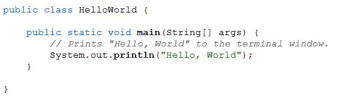

What are the different types of programming languages?
On this page, I will introduce you to the 3 main types of programming languages. Notice how I did not say the 3 main programming langauges? Programming languages can be broken down into 3 broad categories:
- Machine Code
- Assembly Language
- High-Level Languages
| Language Type | Description/Uses | Sample Code |
|---|---|---|
| Machine Language | Machine code is written in hexidecimal and the instructions are interpreted directly in the hardware. All of the instructions are written using very low-level instructions, such as: add, sub, and div. Most programmers will never have to write machine code outside of maybe a classroom setting. | |
| Assembly Language | Assembly languages are simply machine code encoded into a much more human readable form. Programmers who work close to hardware, such as programming microcontrollers, may find assembly language useful for interfacing with the devices they use. | |
| High-Level Languages |
High-level languages are the types of languages you are probably used to seeing, and are the most common type of language that developers use.
these days. High level languages have names for almost everything, have the ability to perform extremely complex expressions, and most importantly
the programmer doesn't have to interface directly with the registers of the computer in order to perform operations. Examples of high-level languages:
|
Here's a sample "Hello World" program in the high level langauge of Java  |